Build progress
21 of 26 feature slices done, 5 partial, 0 in progress, 0 planned (25 Oct 2026, 00:45 IST). Backend: 1296 tests passed, 0 failed, 2 expected failures (known gaps), 1 skipped. Web: 132 tests, typecheck and build pass. The doctor gate is enforced by a database constraint.
21 of 26 slices done, 5 partial. Weighted: done 100%, partial 60%, in progress 35%. Details and commit plan in TRACKER.md.
1The problem
Problem statement IC26-03-10, as filed (this section names the clinical domain; nothing patient-facing does).
Patients on long tuberculosis (TB) treatment often drop out, take the wrong medicines, or miss support they are entitled to. Six parties each hold one piece of the patient's journey: the patient, the private doctor, the lab, the chemist, the treatment Supporter and the national programme portal. Over six months or more of daily treatment, nobody joins these pieces.
Users
| Who | What they need | Where they use CareMemory |
|---|---|---|
| Patient (e.g. Ravi, 32, daily-wage loader) | A one-tap daily check-in in their language, and answers that a doctor has approved | Patient web app, Telegram |
| Doctor (e.g. Dr. Prasad, about 15 such patients) | One ranked queue: who needs me first, why, with evidence | Doctor console, Gmail digest |
| Supporter (e.g. Lakshmi, community health worker) | Who to visit and when, nothing more | Supporter web view |
| District officer | Clinic-level picture without personal data | District dashboard |
Expected output (from the problem statement): opt-in multi-channel check-ins and a Supporter workflow, a doctor review queue, a patient memory timeline with a Day 3 vs Day 60 comparison, contradiction and risk flags with cited evidence, a district dashboard and a 60-day synthetic-data evaluation. Full text: docs/design/CAREMEMORY_PROBLEM_STATEMENT.md. Story: docs/design/CAREMEMORY_STORY_AND_FEATURES.md.
2What is different
🧑⚕️ Memory a doctor approves
doneEvery AI-written message becomes an approval item. Nothing reaches a patient until a doctor approves, edits or rejects it.
🔒 Gate in the database
doneA CHECK constraint and trigger on the outbox refuse any send without a doctor decision or an approved template.
🎯 One decision function
doneConsole, Gmail and the sweeper all call decide(): one transaction writes the decision and the outbox rows.
📐 Rules decide, AI explains
doneNumbers come from Python and SQL. The LLM only parses and narrates, through a governed get_model().
📎 Cite or cut
doneEvery sentence cites an event or belief id; uncited sentences and wrong numbers are cut. The Ask box already checks numbers.
🔋 Degrades, never dies
doneA budget governor moves GREEN to AMBER to RED; in RED only rules and approved templates run.
| Idea | What it means in the code |
|---|---|
| Memory a doctor approves | Every AI-written message becomes an approvals row. Nothing reaches a patient until a doctor approves, edits or rejects it. |
| The doctor gate is a database constraint | cm.outbox has CHECK outbox_doctor_gate: a row needs an approval_id plus a decision_id, or an allow-listed system kind backed by an approved template. A trigger also checks the decision is approve/edit and belongs to that approval. Even a buggy agent cannot insert an unapproved send. (0002_reliability.sql) |
| One decision function | Console, Gmail and the expiry sweeper all call cm/review/decide.py: one transaction writes the decision and the outbox rows. |
| Rules decide, AI explains | Numbers (missed doses, refill gaps, risk) come from plain Python and SQL. The LLM only parses and narrates. |
| Cite or cut | Every sentence must cite an event/belief id (E-, B-, C-, R-, G-, D-). Uncited sentences and numbers that do not match the cited rows are cut; too few left means a template. The Ask box already reports numbers_verified. |
| Degrades, never dies | An AI budget governor moves GREEN to AMBER to RED. In RED the system runs on rules and approved templates only. |
| Opt-in, minimal data | Channels are per-person opt-in, with consent stored per person, channel and purpose; people are pseudonymous tokens (P-0142) and prompts are tokenised before any LLM call. |
3Screenshots
All screens use mock data. Click a screenshot to open it full size.

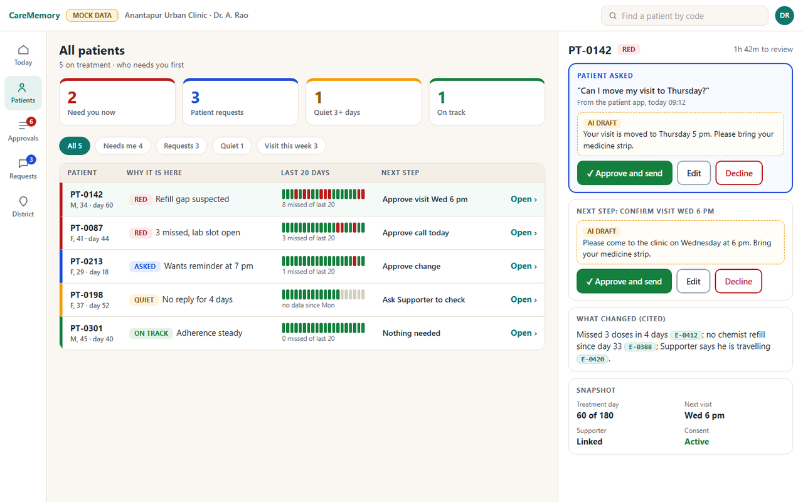
Doctor console: who needs me first
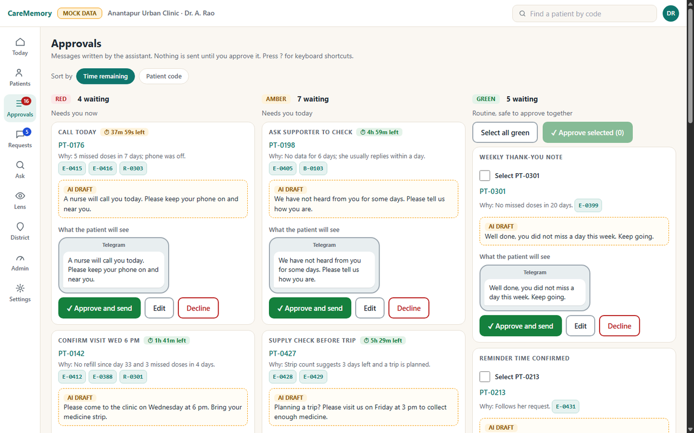
Approvals queue, Red / Amber / Green
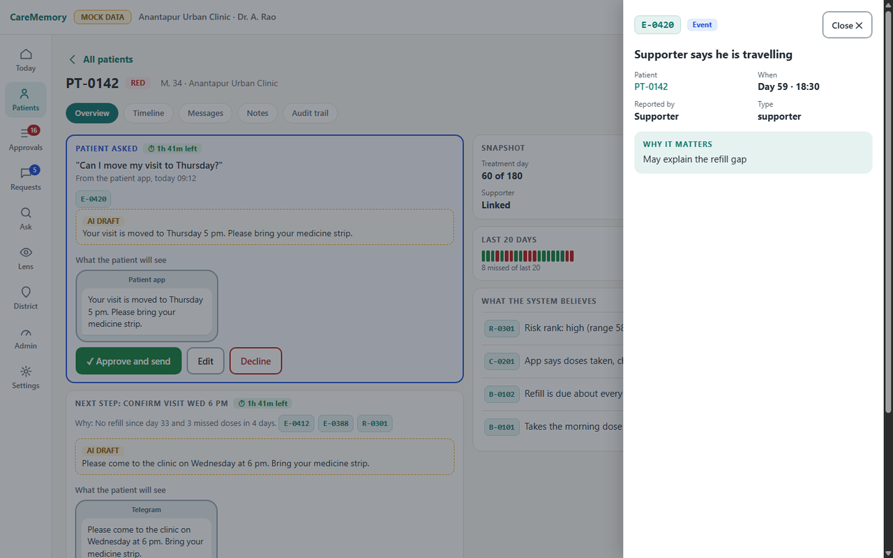
Evidence drawer with cited ids
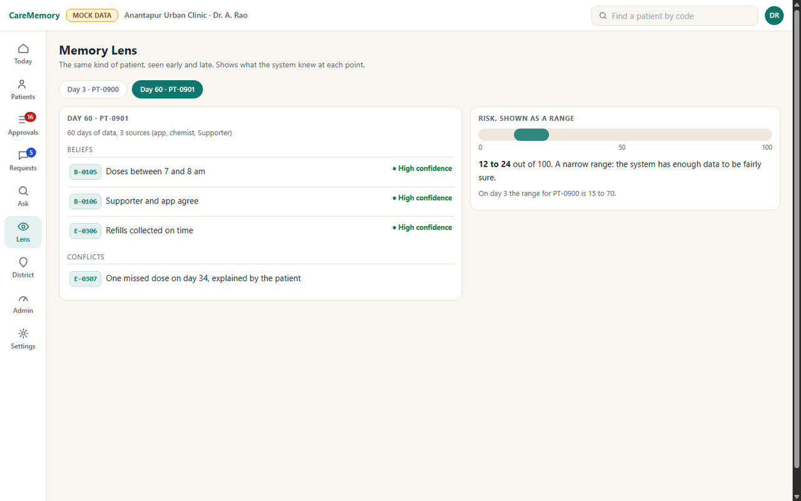
Memory Lens, Day 60
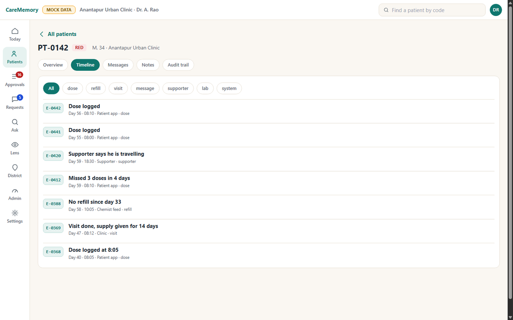
Patient timeline
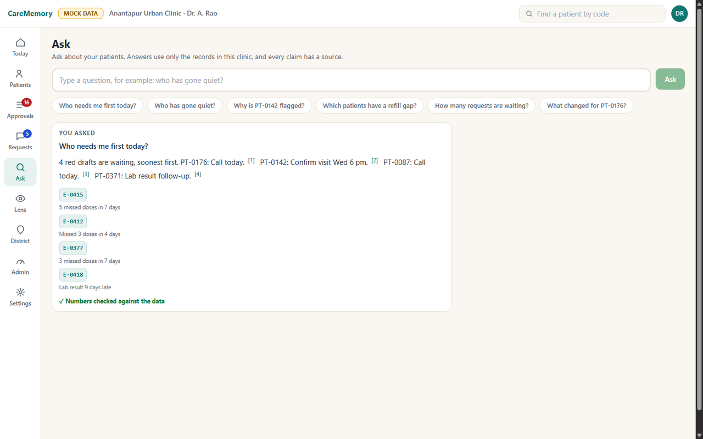
Ask box with citations
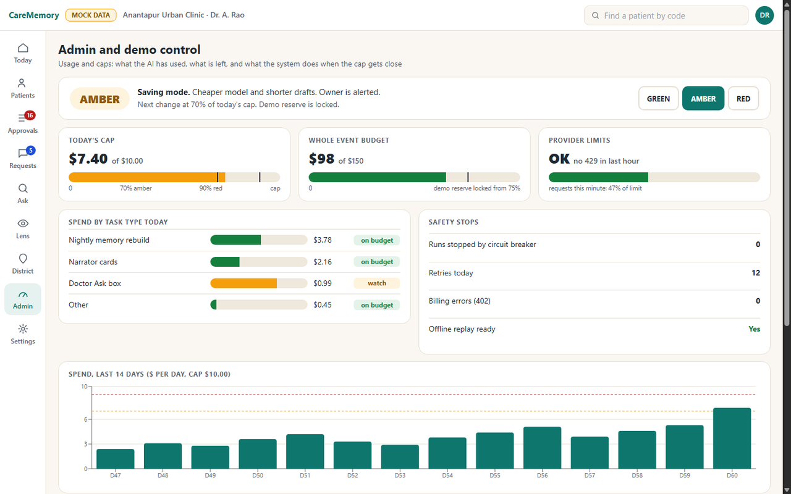
Admin: AI usage and caps
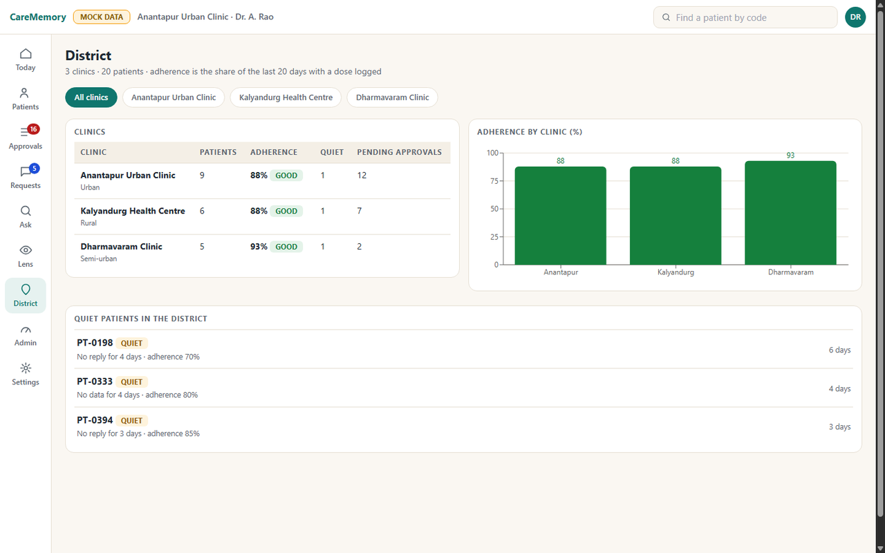
District view
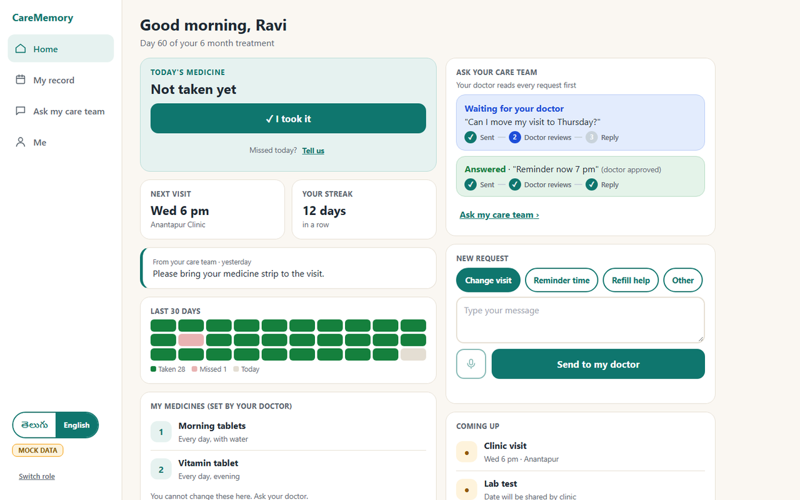
Patient app
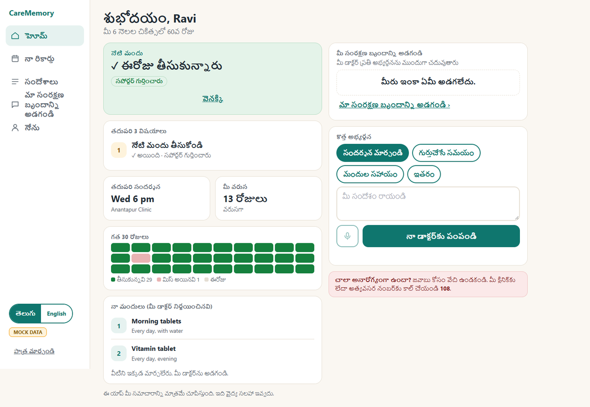
Patient app in Telugu
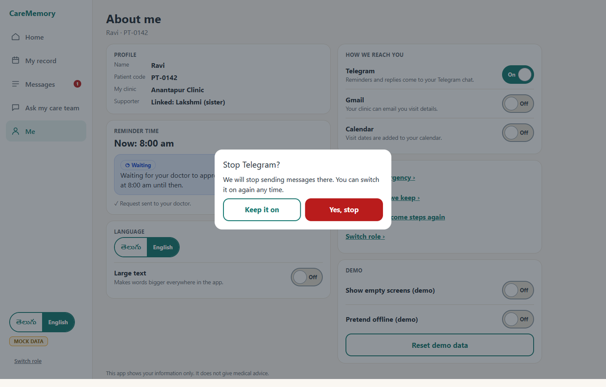
Consent revoke dialog
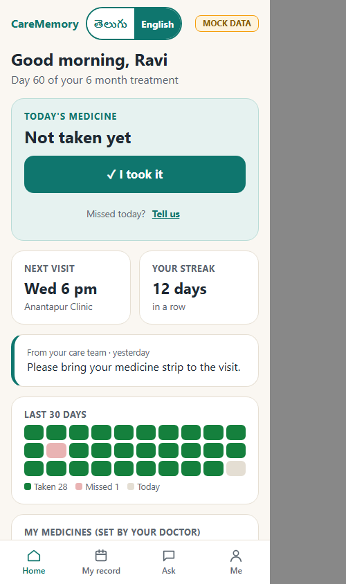
Patient app on a phone
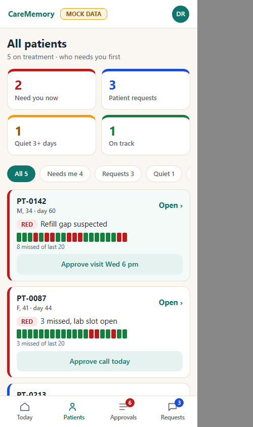
Doctor console on a phone
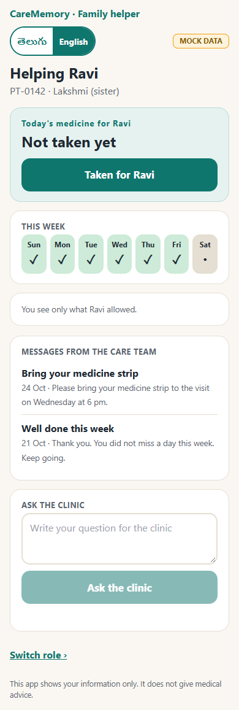
Supporter view on a phone4Features and honest status
| Area | Feature | Status | Evidence |
|---|---|---|---|
| 🗃️ Data | Postgres schema, 7 migrations (events, approvals, outbox, consents, memory tables, RAG tables, auth, views, role grants) | done | cm/store/migrations/, tests/integration/test_repos.py |
| 🗃️ Data | Append-only event store with idempotency keys and recorded_at |
done | cm/store/events_repo.py, integration tests |
| 🔒 Gate | Doctor gate as DB CHECK + trigger on outbox |
done | 0002_reliability.sql, tests/integration/test_decide.py |
| 🔒 Gate | Single decide() transaction (console, Gmail, sweeper) |
done | cm/review/decide.py, test_decide.py |
| 🔌 API | Auth: scrypt passwords, HS256 JWT cookie, role guards, login rate limits | done | cm/api/auth.py, cm/api/routers/auth.py, tests/unit/api/test_auth_unit.py |
| 🔌 API | Doctor routes: review queue, bulk decision, patients, timeline, requests, dashboard, settings | done | cm/api/routers/, tests/integration/test_e2e_api.py |
| 🔌 API | Patient portal routes: today, dose, record, inbox, requests, consents, Supporter check-in | done | cm/api/routers/portal.py, e2e tests |
| 🔌 API | Banned-term filter on every patient and Supporter response | done | cm/api/suppress.py, tests/unit/api/test_suppress.py |
| 🔌 API | Ask box: answers built from DB rows with numbered citations and a number check; LLM version with guards (F15, F19) | done | cm/api/routers/query.py, tests/unit/ai/, AI eval suite |
| 🔌 API | Live updates (SSE /stream), district endpoint, dose undo, documents, admin usage merge, channel status route, nightly trigger |
done | cm/api/routers/stream.py, tests/integration/test_gaps*.py; web falls back to 5 s polling |
| 🌱 Seed | Deterministic seed 42 (same sample content as the UI), idempotent | done | cm/jobs/seed.py, tests/integration/test_seed.py |
| 📝 Content | 12 approved message templates, English + Telugu (Telugu flagged for native review) | done | cm/router/templates/*.yaml, tests/unit/content/ |
| 📝 Content | Banned-term scanner over templates and patient/Supporter UI | done | scripts/banned_terms.py (clean on 24 Oct) |
| 🤖 AI | Budget governor GREEN/AMBER/RED, demo reserve, circuit breaker, retry with retry-after, no retry on 402/auth | done | cm/core/budget.py, retry.py, tests/unit/core_ai/test_ai.py |
| 🤖 AI | Governed get_model(role), PII tokenise + assert_clean() before any LLM call |
done | cm/core/llm.py, tokenize.py, unit tests |
| 🤖 AI | Deep Agents orchestrator, narrator and drafter sub-agents, LangGraph interrupt() at submit_for_review, live run on mock data with DeepSeek |
done | cm/agents/, cm/tools/, cm/validator/, tests/unit/ai/ |
| 🤖 AI | Cite-or-cut validator and narrator / Ask-box guards with a shared banned-term lexicon | done | cm/validator/cite_or_cut.py, AI eval suite (97 offline cases) |
| 🤖 AI | AI eval suite (97 offline cases) | done (2 expected failures are known gaps) | cm/eval/ai_eval.py, AI_EVAL_REPORT.md |
| 🤖 AI | Intake, identity, curator, investigator sub-agents | partial (code present; not separately evidenced here) | cm/agents/subagents/ |
| 🤖 AI | Vision: DeepSeek document extraction into drafts for doctor review (mock data only) | done | openspec/specs/vision-extract/ |
| 🧠 Memory | Memory engine v1: features, detectors, belief lifecycle, conflicts, risk with interval, nightly pipeline with persistence | done | cm/memory/, tests/unit/memory/ |
| 🧠 Memory | Risk model uses fixed documented weights (not trained; training deferred, no fine-tuning planned, RAG is the memory layer); calibration is poor (ECE 0.22 at day 60) | partial | cm/memory/risk.py, AI_EVAL_REPORT.md |
| 📐 Rules | Reconciler rules R1 to R6 (refill vs self-report, payment mismatch, danger symptom, silence, household contact screening) with red-team tests | done | cm/rules/, tests/redteam/ |
| 🔍 RAG | Patient memory RAG: OpenAI text-embedding-3-small (1536d), hybrid BM25 + vector with RRF, MMR, no rerank, cite-or-cut D- citations; web citation chips |
done (measured on mock data, see section 11) | cm/rag/, cm/eval/rag_eval.py, RAG_STRATEGY_v2.md |
| ✈️ Telegram | Webhook: secret check, dedupe on update_id, tap saved as event first, ack under 1 s |
done (tested with fakes and Postgres) | cm/channels/tg_inbound.py, tests/unit/channels/, tests/integration/test_telegram_pg.py |
| ✈️ Telegram | Fast path: 3 missed in 3 days or a danger symptom creates a Red draft (fixed text, no LLM) | done | cm/channels/adapters_pg.py, integration test |
| ✈️ Telegram | Outbox sender: approved rows only, quiet hours 21:00 to 07:00, 1 msg/s per chat, 3 per day, retry-after | done | cm/channels/tg_sender.py, cm/jobs/outbox_drainer.py |
| ✈️ Telegram | Live bot run | partial | needs the owner's bot token and ngrok; steps in cm/channels/NOTES_integration.md |
| ✈️ Telegram | Onboarding wizard with itemised consent, free-text intake, Supporter proxy taps | planned | listed in cm/channels/NOTES.md |
| ✉️ Gmail | Digest builder, reply parser ("approve 1, reject 2 reason"), single-use token check, consent flows, calendar visits, channel fallback | partial (tested against fakes only) | cm/channels/gmail*.py, tests/unit/gmail/ |
| ✉️ Gmail | Real Gmail and Calendar adapter with Pub/Sub push verification, tested offline | partial (live Google verification pending) | cm/channels/, openspec/specs/gmail-lane/ |
| 🖥️ Web | Doctor console: Today, Patients, patient page with tabs, Approvals with SLA countdown and bulk approve, Requests, Ask, Memory Lens, District, Admin usage caps, Settings, keyboard shortcuts, undo toast | done (screens) | web/src/pages/, screenshots above |
| 🖥️ Web | Patient app: welcome and consent, home, record, messages, ask, me (consent revoke, large text), help, privacy; English/Telugu | done (screens) | web/src/pages/PatientApp/ |
| 🖥️ Web | Supporter view | done (screens) | web/src/pages/Supporter/ |
| 🖥️ Web | Real HTTP adapter (cookie session, 401 to login, GET-only retry, optimistic update with rollback), SSE with polling fallback | done | web/src/api/httpAdapter.ts, mapping.test.ts (14 tests) |
| 🖥️ Web | Citation chips and patient-page Ask; honest live-mode patient app (no fake data in live mode) | done | web/src/, 132 web tests |
| 🖥️ Web | Memory Lens and District on real memory data | partial | screens exist; the memory engine now exists, but this tracker records no live check of these two screens against it |
| 🎭 Demo | Deterministic demo accounts at 3, 30 and 60 days | done | openspec/specs/demo-accounts/ |
| 📈 Eval | Seeded 60-day simulator, Day 3 vs 30 vs 60 evaluation (AUROC, Brier, ECE), RAG live eval with LLM judge | done (results in section 11) | cm/sim/, cm/eval/, openspec/specs/simulator-eval/ |
| 📈 Eval | Cassette replay for offline demo | planned | cm/sim/cassette.py, replay.py are still stubs |
| 🚀 Deploy | Dockerfile, docker-compose (pgvector/pg16), numbered GCP scripts, Cloud Build | partial (written, NOT deployed) | infra/00_project.sh to 80_webhooks.sh, infra/cloudbuild.yaml |
| 🚀 Deploy | Production image, Cloud Tasks mode, task auth and deploy scripts | partial (local only, NOT deployed; Google Cloud deployment planned for 2026-10-25, see DEPLOY_PLAN.md) | openspec/specs/cloud-tasks/, openspec/specs/deployment/, TASKS_MODE |
5Architecture
PNG copies of every diagram are in docs/assets/diagrams/ (rendered with Mermaid 11.4.1). Colour key: teal = done, amber = partial, grey dashed = planned. The diagrams were drawn on 24 Oct 2026; since then rules R1-R6, the memory engine and the AI runtime have landed, so the status table in section 4 is the authority where a colour differs.
5.1 System architecture

5.2 Data flows: Ask box, Telegram tap, Gmail reply

5.3 Agent graph (orchestrator and narrator are built; see the status table in section 4)

5.4 Doctor-gate approval sequence (built and tested)

5.5 AI budget states (built and tested)

Thresholds from cm/core/budget.py: exactly 90% is AMBER; RED is strictly over 90%. The demo reserve is locked by shrinking the spendable daily cap.
5.6 Main tables (ER overview)

5.7 Deployment (not deployed: Google Cloud deployment is planned for 2026-10-25)

Earlier design diagrams (framework architecture, data flow, lanes) are in docs/assets/diagrams/design/.
6Tech stack and models
| Layer | Technology |
|---|---|
| ⚙️ Backend | Python 3.12 (3.11+ supported), FastAPI, Pydantic v2 strict, psycopg 3, uvicorn |
| 🤖 AI runtime | LangChain v1 init_chat_model, LangGraph 1.2.x (interrupt(), Postgres checkpointer), deepagents 0.7.30 |
| 🗃️ Database | Postgres 16 + pgvector (Docker image pgvector/pgvector:pg16; Cloud SQL target) |
| 🖥️ Web | React 18, Vite 5, TypeScript 5.6, Tailwind 3, TanStack Query, Recharts, Vitest |
| 💬 Channels | Telegram Bot API (httpx), Gmail API + Pub/Sub push, Google Calendar |
| ☁️ Cloud (target) | Cloud Run services and jobs, Cloud SQL, Cloud Tasks, Pub/Sub, Secret Manager, Cloud Scheduler, region asia-south1 |
| 🧠 Build-time memory | OpenSpec 1.14.3 (every feature, removal and fix logged under openspec/) |
| ✅ Quality | pytest, ruff, import-linter, banned-term scanner |
Model to task. Models are reached only through cm.core.llm.get_model(role); names live in .env, never in code. Providers allowed at runtime: OpenAI or DeepSeek only. DeepSeek and OpenAI are used on mock data only (CM_DATA_CLASS=mock); DeepSeek is refused when CM_DATA_CLASS=real. Names below were confirmed with the provider's /models call; prices are approximate and change, so the governor reads a price table from CM_PRICE_TABLE_JSON.
| Role | Model | Used for |
|---|---|---|
ORCHESTRATOR |
deepseek:deepseek-v4-pro |
Deep Agents orchestrator, narrator (memory card), investigator lead |
WORKER |
deepseek:deepseek-flash |
Drafts for patient/Supporter/doctor, Ask box, intake and curator sub-agents |
JUDGE |
deepseek:deepseek-flash |
Faithfulness judge in evaluation |
FALLBACK |
deepseek:deepseek-flash |
After repeated timeouts or 5xx (never after a spend-cap error) |
VISION |
DeepSeek (see .env) |
Document extraction into drafts for doctor review (mock data only) |
EMBEDDING |
openai:text-embedding-3-small (1536 dimensions) |
Patient memory RAG (hybrid with BM25) |
7Safety and privacy
- Mock data only. Every patient, phone number and record in this repo is synthetic. The seed is deterministic (seed 42).
- Opt-in channels, consent per purpose. Consent is stored per person, channel and purpose (
daily_checkin,care_coordination,supporter_sharing,programme_monitoring);/stopin Telegram withdraws consent and revokes the binding. Events without consent are refused by a tableCHECK. - No disease or drug words reach patients. Patient and Supporter text never contains the disease name, its abbreviation or drug names.
cm/api/suppress.pyfilters responses;scripts/banned_terms.pyscans templates and patient/Supporter screens (clean on 24 Oct). - PII never goes to an LLM.
cm.core.tokenize.tokenize()replaces identifiers before a prompt is built;assert_clean()blocks the call otherwise. People are stored as pseudonymous tokens; names sit in anidentity_vaulttable. - Doctor approval for every AI output, enforced by the database (section 2). No diagnosis or dosing advice: CareMemory coordinates follow-up, the doctor decides.
- Secrets live only in a git-ignored
.envor Secret Manager..env.exampleholds names and placeholders only.
8Repository map
| Path | Purpose | Lane |
|---|---|---|
cm/contracts/ |
Pydantic contracts, frozen at tag contracts-v1 (changes only by RFC in CHANGES.md) |
L0 |
cm/core/ |
Config, DB pool, clock, ids, logging, task queue, budget governor, retry, LLM access, PII tokeniser | A |
cm/store/ |
Migrations and repositories (the only place with raw SQL, with cm/memory/) |
A |
cm/review/ |
decide(): the single doctor-decision transaction |
G |
cm/api/ |
FastAPI app and routers | G (B, J, K own some routers) |
cm/channels/ |
Telegram, Supporter, Gmail, Calendar, consent flows, Postgres adapters | F, M |
cm/router/ |
Channel routing, quiet hours, banned-term check, templates | F, K |
cm/agents/, cm/tools/, cm/validator/ |
AI runtime, governed tools, cite-or-cut and injection checks | E, N, D |
cm/memory/, cm/rules/, cm/identity/ |
Memory engine, reconciler rules R1-R6, identity matching | C, D |
cm/sim/, cm/eval/, cm/rag/ |
Simulator, AI and RAG evaluation, patient memory RAG (cassette replay is still a stub) | B, J, K |
cm/jobs/ |
Command-line jobs: migrate, seed, reminders, outbox drainer, invites, webhook setup | A, B, F |
web/ |
React doctor console, patient app, Supporter view | H1, H2 |
tests/ |
unit/, integration/ (needs Postgres), contract/, redteam/, replay/ |
all |
infra/ |
Numbered GCP scripts, Cloud Build, env files, local Postgres init | I |
scripts/ |
Banned-term scanner, ngrok and Telegram webhook helpers | I, K |
openspec/ |
Build-time memory: one archived change per feature or fix | all |
docs/ |
This page as HTML, design docs, diagrams, screenshots | docs |
9How to run
Prerequisites: Python 3.11+, Docker, Node 20.19+, Git Bash on Windows. Every command below exists in this repo; the ones marked with a tick were run on 24 Oct 2026.
cp .env.example .env # fill values locally; never commit .env. Set DB_PORT=5433 if 5432 is taken
python -m venv .venv && source .venv/Scripts/activate # macOS/Linux: .venv/bin/activate
pip install -r requirements-dev.txt
docker compose up -d db # Postgres 16 + pgvector on host port ${DB_PORT:-5432} (ticked: running on 5433)
python -m cm.jobs.migrate # applies cm/store/migrations 0001..
python -m cm.jobs.seed --reset # deterministic seed 42 (--small for 6 patients); writes demo logins to .env
python -m uvicorn cm.api.main:app --port 8080 # (ticked: GET /healthz returns {"status":"ok"})
cd web && npm ci && npm run dev # http://localhost:5173 (VITE_USE_MOCK=false uses the real API)
Tests:
python -m pytest -m "not live and not slow and not docs" -q # (ticked) unit + integration; DB tests use database caremem_test
cd web && npx vitest run # (ticked)
python scripts/banned_terms.py # (ticked) prints "banned-terms: clean"
Telegram locally (owner step, needs a bot token in .env): ngrok http 8080, then python scripts/tg_set_webhook.py, python -m cm.jobs.make_invite --patient PT-0142, send /start CODE to the bot, python -m cm.jobs.reminders --now and python -m cm.jobs.outbox_drainer --once. Full steps: cm/channels/NOTES_integration.md.
The Makefile wraps the same steps (make up migrate seed, make test, make check) for Git Bash or WSL. GCP deployment scripts are in infra/ (run in numeric order after source infra/vars.sh); they have not been run against a live project. Deployment is planned for 2026-10-25 and has not happened: docs/deploy/DEPLOY_PLAN.md.
10Environment variables (names only)
Never put values in the repo. Full list with placeholders: .env.example.
| Group | Names |
|---|---|
| Runtime | CM_ENV, CM_ROLE, CM_DATA_CLASS, CM_OFFLINE, DEMO_MODE, TZ, LOG_LEVEL, PORT, TASKS_MODE |
| Database | DB_CONNECT_MODE, DB_HOST, DB_PORT, DB_NAME, DB_USER, DB_PASSWORD, DB_USER_APP, DB_PASSWORD_APP, CLOUD_SQL_INSTANCE, CM_TEST_DB_NAME |
| LLM | OPENAI_API_KEY, DEEPSEEK_API_KEY, ORCHESTRATOR_MODEL, WORKER_MODEL, JUDGE_MODEL, FALLBACK_MODEL, VISION_MODEL, EMBEDDING_MODEL, LLM_TIMEOUT_S |
| AI budget | CM_BUDGET_DAILY_USD, CM_BUDGET_TASK_USD, CM_BUDGET_PATIENT_TOKENS, CM_BUDGET_RESERVE_USD, CM_BUDGET_RESERVE_UNLOCKED, CM_MAX_TOOL_CALLS, CM_MAX_SUBAGENT_DEPTH, CM_PRICE_TABLE_JSON, DAILY_COST_CAP_USD |
| ✈️ Telegram | TELEGRAM_BOT_TOKEN, TELEGRAM_WEBHOOK_SECRET, TELEGRAM_PER_CHAT_RPS, TELEGRAM_GLOBAL_RPS, INBOUND_PER_CHAT_PER_MIN, PUBLIC_BASE_URL, FASTPATH_MISSED_THRESHOLD |
| Gmail / Calendar | GMAIL_OAUTH_CLIENT_JSON, GMAIL_REFRESH_TOKEN, GMAIL_MAILBOX, DOCTOR_EMAIL_ALLOWLIST, GMAIL_PUBSUB_TOPIC, PUBSUB_PUSH_AUDIENCE, GOOGLE_CALENDAR_ID |
| Security | JWT_SIGNING_KEY, JWT_TTL_MIN, PII_MASTER_KEY, DEMO_USER_PASSWORDS, LOGIN_PER_IP_PER_MIN, CORS_ORIGINS, COOKIE_SECURE |
| GCP | GCP_PROJECT, GCP_REGION, GCS_DOCS_BUCKET, WORKER_URL, TASKS_QUEUE_AGENT_RUNS, TASKS_QUEUE_RESUMES, TASKS_QUEUE_OUTBOUND |
| 🖥️ Web | VITE_USE_MOCK, VITE_API_BASE (see web/.env.example) |
11Testing
Final verified numbers as of 2026-10-25 00:45 IST (earlier figures from 24 Oct are superseded).
| Suite | Result |
|---|---|
| Backend (pytest) | 1296 passed, 0 failed, 2 expected failures (known gaps), 1 skipped |
| 🖥️ Web (vitest) | 132 tests passed; typecheck and build pass |
| AI eval suite (offline) | 97 cases |
| 📝 Content | python scripts/banned_terms.py prints "banned-terms: clean" (last recorded 24 Oct) |
Commands: python -m pytest -m "not live and not slow and not docs" -q and cd web && npx vitest run. DB tests use the database caremem_test. Live-model tests are marked @pytest.mark.live.
RAG live eval (66 questions across day 3, 30 and 60 on PT-0142), measured with DeepSeek flash on mock data:
| Metric | Result |
|---|---|
| Abstain accuracy | 98.5% |
| Groundedness | 96.4% |
| Judge pass | 95.5% |
| Temporal leakage | 0 |
| Citation validity | 1.0 |
| Retrieval recall@10 (day 3 / 30 / 60) | 1.0 / 1.0 / 0.97 |
Caveats: 3 misses were model-side. The database-backend check disagrees with the in-memory harness by up to 0.106 on abstain accuracy because of rendering differences. Details: RAG_EVAL_PLAN.md, RAG_RESEARCH_NOTES.md.
Simulator, Day 3 to Day 30 to Day 60 (seeded, mock data):
| Day | AUROC | Brier |
|---|---|---|
| 3 | 0.645 | 0.261 |
| 30 | 0.703 | 0.249 |
| 60 | 0.796 | 0.197 |
Calibration is poor: ECE at day 60 is 0.22. The risk model uses fixed documented weights; it is not trained (training is deferred, no fine-tuning is planned, RAG is the memory layer). The two expected failures in the backend suite are known gaps; see AI_EVAL_REPORT.md.
The bug-finding work behind F20 used property, concurrency, contract and edge-case suites and found 19 real bugs, all fixed. Not covered: live Google (Gmail, Calendar) calls and the Cloud deployment.
12Evaluation mapping
Organisers' latest weighting: Round 1 = 40%, Round 2 = 60% (the older 15/35/50 plan is kept in docs/design/EVALUATION_PLAN.md). Round 2 rubric, raw maximum 50, scaled to 60:
| # | Criterion (raw max) | Share of 100 | What we show |
|---|---|---|---|
| R1 | Idea and solution presentation, repo progress tracker | 40 | This README, diagrams, TRACKER.md, one commit per feature slice |
| 1 | Functionality and working demo (15) | 18 | Doctor approves a patient request and the patient app shows "doctor approved"; a Telegram tap becomes an event and a Red draft; Ask box answers with citations |
| 2 | Technical depth and code quality (10) | 12 | DB-level doctor gate, single decide() transaction, budget governor, PII tokeniser, cite-or-cut, frozen contracts, 1296 backend and 132 web tests, OpenSpec log |
| 3 | UI/UX and usability (5) | 6 | Responsive console and patient app (360 px to 1440 px), Telugu toggle, large text, empty states, keyboard shortcuts |
| 4 | Completeness vs proposed scope (5) | 6 | Section 4 and TRACKER.md: honest done / partial / planned against the problem statement's expected outputs |
| 5 | Viability and deployment readiness (5) | 6 | Spend caps with RED template-only mode, consent model, no PII to LLMs, Docker image, GCP scripts, cost per patient |
| 6 | Q&A handling and team contribution (5) | 6 | Lane ownership (section 8), OpenSpec change per feature, design docs in docs/design/ |
| 7 | Final presentation and demo delivery (5) | 6 | Ravi's Day 3 vs Day 60 story, rehearsed demo path |
13Roadmap
Next (planned, not done)
- Deploy to Google Cloud (Cloud Run, asia-south1, one domain with several hostnames): planned for 2026-10-25, NOT yet done. Plan: docs/deploy/DEPLOY_PLAN.md. The local stack stays as the offline backup.
- Verify the Gmail and Calendar adapter against real Google (tested offline only so far).
- Live Telegram bot run with the owner's bot; record a backup video.
- Native-speaker review of Telugu templates and answers; Hindi.
After the hackathon
- Per-clinic scoping of doctor reads (today doctors see every clinic's patients).
- Better risk calibration (ECE 0.22 at day 60); training is deferred.
- Pilot with one private clinic on synthetic-then-consented data.
- Move to an India-region provider with zero data retention before any real patient data (
CM_DATA_CLASS=realalready refuses DeepSeek).
14Team
The Sentience Circuit, JNTU Anantapur Innovators Conclave 2026.
| Member | Role |
|---|---|
| Manobiram (Rammanobi) | Product owner, architecture, integration |
| Idris | Team member |
| Abhishek | Team member |
Built with parallel AI coding agents, one lane each, coordinated through frozen contracts and OpenSpec; every lane's changes are logged under openspec/changes/archive/.
15Known limitations
- Doctors can read all clinics' patients: access is district-wide by design; per-clinic scoping is not built.
- The append-only event store can be bypassed for erasure through
SET LOCAL cm.allow_erasure. - Risk calibration is poor: ECE 0.22 at day 60. The risk model uses fixed documented weights and is not trained.
- Telugu answer text is mostly English, and the Telugu templates need a native-speaker review.
- The simulator clock is one day ahead of the real date in the seeded data.
- The Gmail live path and the Cloud deployment are not yet verified against real Google.
- DeepSeek and OpenAI are used on mock data only (
CM_DATA_CLASS=mock; DeepSeek is refused for real data). There is no real patient data.
CareMemory coordinates follow-up. It does not diagnose or give dosing advice; the doctor decides.